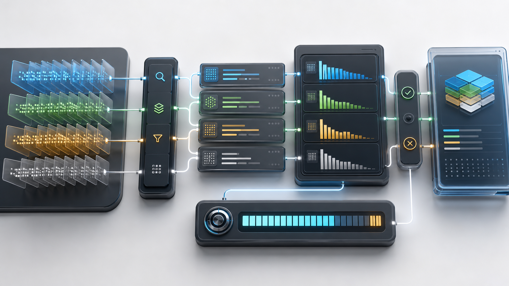

User
I like evening check-ins.
The user shares a durable preference that should be available in future sessions.
Commercial long-term memory middleware
An interactive sales demo for AI Long-Term Memory Engine workflows across AI companions, agent platforms, and game studios.

Unified public benchmark metric
Customer scenarios
Memory pipeline stages
Day pilot test
Demo Website v2.0
Choose a market scenario, then step through how Memory Engine stores useful information, waits until a later moment, and retrieves a relevant memory packet.
User
The user shares a durable preference that should be available in future sessions.
Memory Engine
The write gate stores the preference as a durable memory record.
Animated architecture
Each customer workflow moves through the same commercial memory pipeline: capture the event, apply the write gate, store memory, retrieve relevant records, package context, and send it to the application.
Technical advantages
Stores preferences, constraints, decisions, project facts, and durable customer state while skipping low-value turns.
Merges duplicate and similar memories into compact records with repeat counts and updated metadata.
Ranks memory by query relevance, tags, importance, and repeat signal with a swappable retriever API.
Builds structured prompt-ready memory packets within a fixed token budget.
Benchmark report
For all customer-facing website materials, Memory Engine uses a single conservative benchmark statement.
Unified public benchmark metric
Long-context scenarios
Validate with customer data
Optimized memory context
Contact
For pilot access, demo booking, or commercial licensing, contact Sential Labs directly. The public launch site is fully static and does not collect contact details.
Send a short note with your company, use case, and the workflow you want to test.
Email Sential Labs